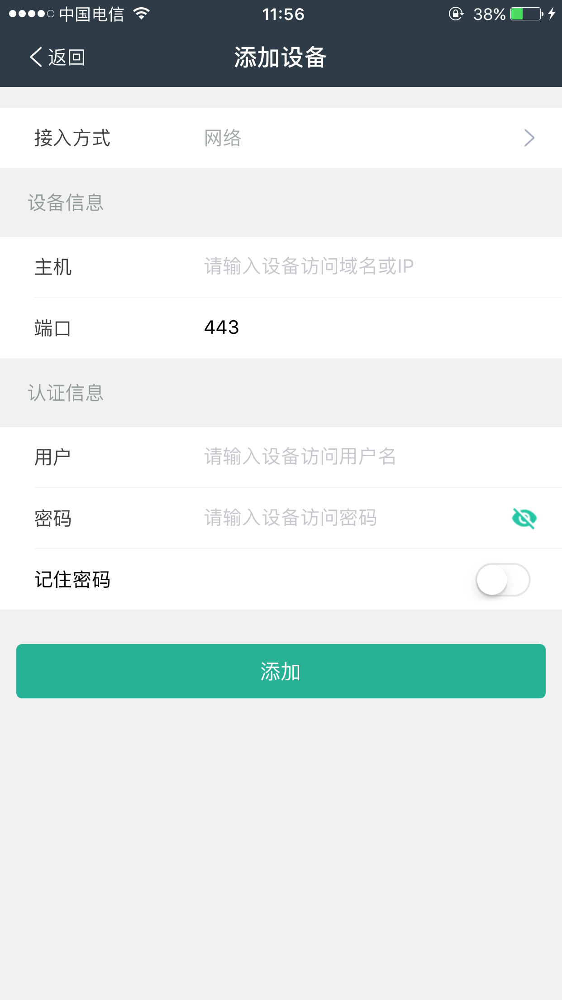
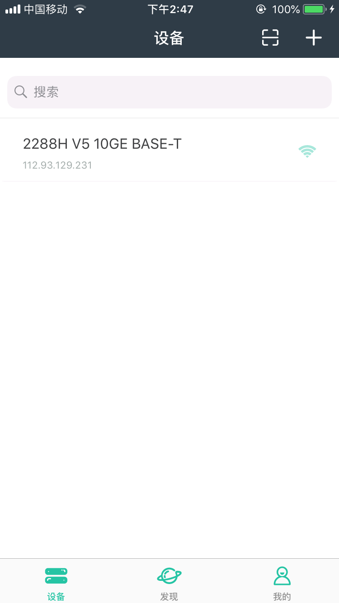

进入应用首页，有两个入口可以进入添加设备页面，
a) 点击首页标题栏上的图标；
b) 点击 "发现" Tab栏，然后点击"添加设备"按钮

在添加设备页面中，设置待添加设备的主机（IP/域名），端口，用户，密码以及是否记住密码，然后点击提交按钮即可。提交之后，如果该设备可以正常连接，应用会主动获取设备的别名作为添加的设备的名称；如果未设置别名，则会使用设备的型号作为名称；如果未能获取型号，则使用默认的"设备"作为名称。

在成功提交之后，返回设备列表主页面，新增的设备会显示在列表中，
